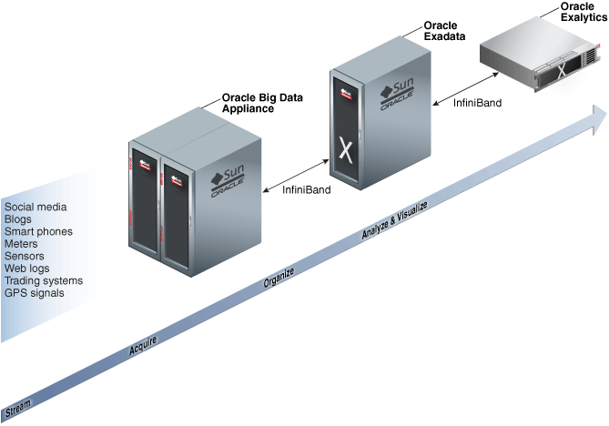
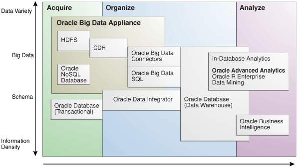

1 Introducing Oracle Big Data Appliance
This chapter presents an overview of Oracle Big Data Appliance and describes the software installed on the system. This chapter contains the following sections:
- What Is Big Data?
- The Oracle Big Data Solution
- Software for Big Data Appliance
- Acquiring Data for Analysis
- Organizing Big Data
- Analyzing and Visualizing Big Data
Parent topic: Administration
1.1 What Is Big Data?
Using transactional data as the source of business intelligence has been commonplace for many years. As digital technology and the World Wide Web spread into every aspect of modern life, other sources of data can make important contributions to business decision making. Many businesses are looking to these new data sources. They are finding opportunities in analyzing vast amounts of data that until recently was discarded.
Big data is characterized by:
-
A variety of data sources
-
A complexity of data types
-
A high volume of data flow
-
A high velocity of data transactions
These characteristics pinpoint the challenges in deriving value from big data, and the differences between big data and traditional data sources that primarily provide highly structured, transactional data.
Parent topic: Introducing Oracle Big Data Appliance
1.1.1 High Variety
Big data is derived from a variety of sources, such as:
-
Equipment sensors: Medical, manufacturing, transportation, and other machine sensor transmissions
-
Machines: Call detail records, web logs, smart meter readings, Global Positioning System (GPS) transmissions, and trading systems records
-
Social media: Data streams from social media sites such as Facebook and blogging sites such as Twitter
Analysts can mine this data repeatedly as they devise new ways of extracting meaningful insights. What seems irrelevant today might prove to be highly pertinent to your business tomorrow.
Challenge: Delivering flexible systems to handle this high variety
Parent topic: What Is Big Data?
1.1.2 High Complexity
As the variety of data types increases, the complexity of the system increases. The complexity of data types also increases in big data because of its low structure.
Challenge: Finding solutions that apply across a broad range of data types.
Parent topic: What Is Big Data?
1.1.3 High Volume
Social media can generate terabytes of daily data. Equipment sensors and other machines can generate that much data in less than an hour.
Even traditional data sources for data warehouses, such as customer profiles from customer relationship management (CRM) systems, transactional enterprise resource planning (ERP) data, store transactions, and general ledger data, have increased tenfold in volume over the past decade.
Challenge: Providing scalability and ease in growing the system
Parent topic: What Is Big Data?
1.1.4 High Velocity
Huge numbers of sensors, web logs, and other machine sources generate data continuously and at a much higher speed than traditional sources, such as individuals entering orders into a transactional database.
Challenge: Handling the data at high speed without stressing the structured systems
Parent topic: What Is Big Data?
1.2 The Oracle Big Data Solution
Oracle Big Data Appliance is an engineered system comprising both hardware and software components. The hardware is optimized to run the enhanced big data software components.
Oracle Big Data Appliance delivers:
-
A complete and optimized solution for big data
-
Single-vendor support for both hardware and software
-
An easy-to-deploy solution
-
Tight integration with Oracle Database and Oracle Exadata Database Machine
Oracle provides a big data platform that captures, organizes, and supports deep analytics on extremely large, complex data streams flowing into your enterprise from many data sources. You can choose the best storage and processing location for your data depending on its structure, workload characteristics, and end-user requirements.
Oracle Database enables all data to be accessed and analyzed by a large user community using identical methods. By adding Oracle Big Data Appliance in front of Oracle Database, you can bring new sources of information to an existing data warehouse. Oracle Big Data Appliance is the platform for acquiring and organizing big data so that the relevant portions with true business value can be analyzed in Oracle Database.
For maximum speed and efficiency, Oracle Big Data Appliance can be connected to Oracle Exadata Database Machine running Oracle Database. Oracle Exadata Database Machine provides outstanding performance in hosting data warehouses and transaction processing databases. Moreover, Oracle Exadata Database Machine can be connected to Oracle Exalytics In-Memory Machine for the best performance of business intelligence and planning applications. The InfiniBand connections between these engineered systems provide high parallelism, which enables high-speed data transfer for batch or query workloads.
The following figure shows the relationships among these engineered systems.
Figure 1-1 Oracle Engineered Systems for Big Data
Description of "Figure 1-1 Oracle Engineered Systems for Big Data"
Parent topic: Introducing Oracle Big Data Appliance
1.3 Software for Big Data Appliance
The Oracle Linux operating system and Cloudera's Distribution including Apache Hadoop (CDH) underlie all other software components installed on Oracle Big Data Appliance. CDH is an integrated stack of components that have been tested and packaged to work together.
CDH has a batch processing infrastructure that can store files and distribute work across a set of computers. Data is processed on the same computer where it is stored. In a single Oracle Big Data Appliance rack, CDH distributes the files and workload across 18 servers, which compose a cluster. Each server is a node in the cluster.
The software framework consists of these primary components:
-
File system: The Hadoop Distributed File System (HDFS) is a highly scalable file system that stores large files across multiple servers. It achieves reliability by replicating data across multiple servers without RAID technology. It runs on top of the Linux file system on Oracle Big Data Appliance.
-
MapReduce engine: The MapReduce engine provides a platform for the massively parallel execution of algorithms written in Java. Oracle Big Data Appliance 3.0 runs YARN by default.
-
Administrative framework: Cloudera Manager is a comprehensive administrative tool for CDH. In addition, you can use Oracle Enterprise Manager to monitor both the hardware and software on Oracle Big Data Appliance.
-
Apache projects: CDH includes Apache projects for MapReduce and HDFS, such as Hive, Pig, Oozie, ZooKeeper, HBase, Sqoop, and Spark.
-
Cloudera applications: Oracle Big Data Appliance installs all products included in Cloudera Enterprise Data Hub Edition, including Impala, Search, and Navigator.
1.3.1 Software Component Overview
The major software components perform three basic tasks:
-
Acquire
-
Organize
-
Analyze and visualize
The best tool for each task depends on the density of the information and the degree of structure. The following figure shows the relationships among the tools and identifies the tasks that they perform.
Figure 1-2 Oracle Big Data Appliance Software Overview
Description of "Figure 1-2 Oracle Big Data Appliance Software Overview"
Parent topic: Software for Big Data Appliance
1.4 Acquiring Data for Analysis
Databases used for online transaction processing (OLTP) are the traditional data sources for data warehouses. The Oracle solution enables you to analyze traditional data stores with big data in the same Oracle data warehouse. Relational data continues to be an important source of business intelligence, although it runs on separate hardware from Oracle Big Data Appliance.
Oracle Big Data Appliance provides these facilities for capturing and storing big data:
Parent topic: Introducing Oracle Big Data Appliance
1.4.1 Hadoop Distributed File System
Cloudera's Distribution including Apache Hadoop (CDH) on Oracle Big Data Appliance uses the Hadoop Distributed File System (HDFS). HDFS stores extremely large files containing record-oriented data. On Oracle Big Data Appliance, HDFS splits large data files into chunks of 256 megabytes (MB), and replicates each chunk across three different nodes in the cluster. The size of the chunks and the number of replications are configurable.
Chunking enables HDFS to store files that are larger than the physical storage of one server. It also allows the data to be processed in parallel across multiple computers with multiple processors, all working on data that is stored locally. Replication ensures the high availability of the data: if a server fails, the other servers automatically take over its work load.
HDFS is typically used to store all types of big data.
See Also:
-
For conceptual information about Hadoop technologies, refer to this third-party publication:
Hadoop: The Definitive Guide, Third Edition by Tom White (O'Reilly Media Inc., 2012, ISBN: 978-1449311520).
-
For documentation about Cloudera's Distribution including Apache Hadoop, see the Cloudera documentation at
Parent topic: Acquiring Data for Analysis
1.4.2 Apache Hive
Hive is an open-source data warehouse that supports data summarization, ad hoc querying, and data analysis of data stored in HDFS. It uses a SQL-like language called HiveQL. An interpreter generates MapReduce code from the HiveQL queries. By storing data in Hive, you can avoid writing MapReduce programs in Java.
Hive is a component of CDH and is always installed on Oracle Big Data Appliance. Oracle Big Data Connectors can access Hive tables.
Parent topic: Acquiring Data for Analysis
1.4.3 Oracle NoSQL Database
Oracle NoSQL Database is a distributed key-value database built on the proven storage technology of Berkeley DB Java Edition. Whereas HDFS stores unstructured data in very large files, Oracle NoSQL Database indexes the data and supports transactions. But unlike Oracle Database, which stores highly structured data, Oracle NoSQL Database has relaxed consistency rules, no schema structure, and only modest support for joins, particularly across storage nodes.
NoSQL databases, or "Not Only SQL" databases, have developed over the past decade specifically for storing big data. However, they vary widely in implementation. Oracle NoSQL Database has these characteristics:
-
Uses a system-defined, consistent hash index for data distribution
-
Supports high availability through replication
-
Provides single-record, single-operation transactions with relaxed consistency guarantees
-
Provides a Java API
Oracle NoSQL Database is designed to provide highly reliable, scalable, predictable, and available data storage. The key-value pairs are stored in shards or partitions (that is, subsets of data) based on a primary key. Data on each shard is replicated across multiple storage nodes to ensure high availability. Oracle NoSQL Database supports fast querying of the data, typically by key lookup.
An intelligent driver links the NoSQL database with client applications and provides access to the requested key-value on the storage node with the lowest latency.
Oracle NoSQL Database includes hashing and balancing algorithms to ensure proper data distribution and optimal load balancing, replication management components to handle storage node failure and recovery, and an easy-to-use administrative interface to monitor the state of the database.
Oracle NoSQL Database is typically used to store customer profiles and similar data for identifying and analyzing big data. For example, you might log in to a website and see advertisements based on your stored customer profile (a record in Oracle NoSQL Database) and your recent activity on the site (web logs currently streaming into HDFS).
Oracle NoSQL Database is an optional component of Oracle Big Data Appliance and runs on a separate cluster from CDH.
1.5 Organizing Big Data
Oracle Big Data Appliance provides several ways of organizing, transforming, and reducing big data for analysis:
Parent topic: Introducing Oracle Big Data Appliance
1.5.1 MapReduce
The MapReduce engine provides a platform for the massively parallel execution of algorithms written in Java. MapReduce uses a parallel programming model for processing data on a distributed system. It can process vast amounts of data quickly and can scale linearly. It is particularly effective as a mechanism for batch processing of unstructured and semistructured data. MapReduce abstracts lower-level operations into computations over a set of keys and values.
Although big data is often described as unstructured, incoming data always has some structure. However, it does not have a fixed, predefined structure when written to HDFS. Instead, MapReduce creates the desired structure as it reads the data for a particular job. The same data can have many different structures imposed by different MapReduce jobs.
A simplified description of a MapReduce job is the successive alternation of two phases: the Map phase and the Reduce phase. Each Map phase applies a transform function over each record in the input data to produce a set of records expressed as key-value pairs. The output from the Map phase is input to the Reduce phase. In the Reduce phase, the Map output records are sorted into key-value sets, so that all records in a set have the same key value. A reducer function is applied to all the records in a set, and a set of output records is produced as key-value pairs. The Map phase is logically run in parallel over each record, whereas the Reduce phase is run in parallel over all key values.
Parent topic: Organizing Big Data
1.5.2 Oracle Big Data SQL
Oracle Big Data SQL supports queries against vast amounts of big data stored in multiple data sources, including Apache Hive, HDFS, Oracle NoSQL Database, and Apache HBase. You can view and analyze data from various data stores together, as if it were all stored in an Oracle database.
Using Oracle Big Data SQL, you can query data stored in a Hadoop cluster using the complete SQL syntax. You can execute the most complex SQL SELECT statements against data in Hadoop, either manually or using your existing applications, to tease out the most significant insights.
Oracle Big Data SQL is licensed separately from Oracle Big Data Appliance.
Oracle Big Data SQL includes the Copy to Hadoop and Oracle Shell for Hadoop Loaders features. The Oracle Shell for Hadoop Loaders helper shell uses the Copy to Hadoop feature of Big Data SQL to identify and copy Oracle Database data to the Hadoop Distributed File System. An Apache Hive table is created over the data that is copied, allowing Hive to process the data locally.
See Also:
Parent topic: Organizing Big Data
1.5.3 Oracle Big Data Connectors
Oracle Big Data Connectors facilitate data access between data stored in CDH and Oracle Database. The connectors are licensed separately from Oracle Big Data Appliance and include:
- Oracle SQL Connector for Hadoop Distributed File System
- Oracle Loader for Hadoop
- Oracle Data Integrator Enterprise Edition
- Oracle XQuery for Hadoop
- Oracle R Advanced Analytics for Hadoop
- Oracle Shell for Hadoop Loaders
See Also:
Parent topic: Organizing Big Data
1.5.3.1 Oracle SQL Connector for Hadoop Distributed File System
Oracle SQL Connector for Hadoop Distributed File System (Oracle SQL Connector for HDFS) provides read access to HDFS from an Oracle database using external tables.
An external table is an Oracle Database object that identifies the location of data outside of the database. Oracle Database accesses the data by using the metadata provided when the external table was created. By querying the external tables, users can access data stored in HDFS as if that data were stored in tables in the database. External tables are often used to stage data to be transformed during a database load.
You can use Oracle SQL Connector for HDFS to:
Parent topic: Oracle Big Data Connectors
1.5.3.2 Oracle Loader for Hadoop
Oracle Loader for Hadoop is an efficient and high-performance loader for fast movement of data from a Hadoop cluster into a table in an Oracle database. It can read and load data from a wide variety of formats. Oracle Loader for Hadoop partitions the data and transforms it into a database-ready format in Hadoop. It optionally sorts records by a sorting key (such as a primary key) before loading the data or creating output files. The load runs as a MapReduce job on the Hadoop cluster.
Parent topic: Oracle Big Data Connectors
1.5.3.3 Oracle Data Integrator Enterprise Edition
Oracle Data Integrator (ODI) Enterprise Edition extracts, transforms, and loads data into Oracle Database from a wide range of sources.
In ODI, a knowledge module (KM) is a code template dedicated to a specific task in the data integration process. You use Oracle Data Integrator Studio to load, select, and configure the KMs for your particular application. More than 150 KMs are available to help you acquire data from a wide range of third-party databases and other data repositories. You only need to load a few KMs for any particular job.
Oracle Data Integrator Enterprise Edition contains the KMs specifically for use with big data.
The ODI agent mounted on Oracle Big Data Appliance is the Standalone Agent (rather than the Colocated Agent or Java EE Agent ).
You can establish master-child relationships between ODI agents on Oracle Big Data Appliance. You can also configure an external HA master Java EE Agent to distribute jobs to multiple Standalone Agents on Oracle Big Data Appliance, which is useful if your enterprise uses ODI to extract data from other sources in addition to the appliance.
Parent topic: Oracle Big Data Connectors
1.5.3.4 Oracle XQuery for Hadoop
Oracle XQuery for Hadoop runs transformations expressed in the XQuery language by translating them into a series of MapReduce jobs, which are executed in parallel on the Hadoop cluster. The input data can be located in HDFS or Oracle NoSQL Database. Oracle XQuery for Hadoop can write the transformation results to HDFS, Oracle NoSQL Database, or Oracle Database.
Parent topic: Oracle Big Data Connectors
1.5.3.5 Oracle R Advanced Analytics for Hadoop
Oracle R Advanced Analytics for Hadoop is a collection of R packages that provides:
-
Interfaces to work with Hive tables, Apache Hadoop compute infrastructure, local R environment and database tables
-
Predictive analytic techniques written in R or Java as Hadoop MapReduce jobs that can be applied to data in HDFS files
Using simple R functions, you can copy data between R memory, the local file system, HDFS, and Hive. You can write mappers and reducers in R, schedule these R programs to execute as Hadoop MapReduce jobs, and return the results to any of those locations.
Parent topic: Oracle Big Data Connectors
1.5.3.6 Oracle Shell for Hadoop Loaders
Oracle Shell for Hadoop Loaders is a helper shell that provides a simple to use command line interface to Oracle Loader for Hadoop, Oracle SQL Connector for HDFS, and the Copy to Hadoop feature of Big Data SQL.
Parent topic: Oracle Big Data Connectors
1.5.4 Oracle R Support for Big Data
R is an open-source language and environment for statistical analysis and graphing It provides linear and nonlinear modeling, standard statistical methods, time-series analysis, classification, clustering, and graphical data displays. Thousands of open-source packages are available in the Comprehensive R Archive Network (CRAN) for a spectrum of applications, such as bioinformatics, spatial statistics, and financial and marketing analysis. The popularity of R has increased as its functionality matured to rival that of costly proprietary statistical packages.
Analysts typically use R on a PC, which limits the amount of data and the processing power available for analysis. Oracle eliminates this restriction by extending the R platform to directly leverage Oracle Big Data Appliance. Oracle R Distribution is installed on all nodes of Oracle Big Data Appliance.
Oracle R Advanced Analytics for Hadoop provides R users with high-performance, native access to HDFS and the MapReduce programming framework, which enables R programs to run as MapReduce jobs on vast amounts of data. Oracle R Advanced Analytics for Hadoop is included in the Oracle Big Data Connectors. See "Oracle R Advanced Analytics for Hadoop".
Oracle R Enterprise is a component of the Oracle Advanced Analytics option to Oracle Database. It provides:
-
Transparent access to database data for data preparation and statistical analysis from R
-
Execution of R scripts at the database server, accessible from both R and SQL
-
A wide range of predictive and data mining in-database algorithms
Oracle R Enterprise enables you to store the results of your analysis of big data in an Oracle database, or accessed for display in dashboards and applications.
Both Oracle R Advanced Analytics for Hadoop and Oracle R Enterprise make Oracle Database and the Hadoop computational infrastructure available to statistical users without requiring them to learn the native programming languages of either one.
See Also:
-
For information about R, go to
-
For information about Oracle R Enterprise, go to
Parent topic: Organizing Big Data